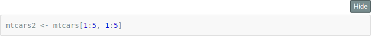

Themes
R Markdown templates
- R Notebook
- Document
- HTML
- Markdown
- Word
- Presentation
- HTML (ioslides)
- HTML (Slidy)
- PDF (Beamer)
- reveal.js
- Shiny
- Document
- Presentation (ioslides)
- Template
- Lightweight and Pretty Document & Vignette1 (HTML)
- GitHub Document (Markdown)
- HTML clean & HTML clean ProjectTemplate report templates
- HTML docco & HTML docco ProjectTemplate report templates
- HTML readthedown & HTML readthedown ProjectTemplate report templates
- Tufte Handout (HTML or PDF)
- Journal Articles…
Most of these templates are showcased in a gallery.
Beyond the basics settings (code & plot chunks, code & languages, parameters, tables), we have specific settings and options for HTML documents.
This post is a wrap-up of templates. It covers the prettydoc package, the rmarkdown package (GitHub), the rmdformats package (clear, docco, readthedocs), and the tufte package.
R Notebook
This is similar to Jupyter Notebook.
Documents
The document default settings…
output: document…can be changed; see the appearance and style.
output:
html_document:
theme: default
highlight: defaultPresentations
output: ioslides_presentationcreates simple HTML slides with smooth transitions in the browser.output: slidy_presentationcreates contrasted HTML slides in the browser.output: beamer_presentationcreates simple PDF slides.
Shiny
The difference between a Document and a Shiny document…
output: html_document
runtime: shiny… or a Presentation and a Shiny presentation…
output: ioslides_presentation
runtime: shiny…is the interactivity.
Templates
They have standard settings for theme and highlight.
The Lightweight and Pretty Document & Vignette templates
Install the prettydoc package.
# Document
output:
prettydoc::html_pretty:
theme: architect
highlight: github# Vignette
output:
prettydoc::html_pretty:
theme: cayman
highlight: githubThe GitHub Document & Vignette templates
Install the rmarkdown package.
# Document
output: github_document# Vignette
output: rmarkdown::html_vignetteThe rmdformat templates
Install the rmdformats package.
output:
rmdformats::readthedown:
highlight: kate…rmdformats::html_clean: and rmdformats::html_docco:.
The Tufte templates
Install the tufte package.
output:
tufte::tufte_handout: default
...The Journal Articles templates
Install the rticles package.
Appearance and style
 |
 |
 |
 |
 |
 |
 |
 |
 |
 |
 |
 |
 |
 |
 |
 |
 |
 |
 |
 |
 |
Table of Contents
output:
html_document:
toc: true
toc_depth: 2 # 2 shows levels # and ##
toc_float: true # always visible on the left
collapsed: false # sub-section are displayed
smooth_scroll: true
number_sections: true # add numbersTabbed sections
Add {.tabset .tabset-fade .tabset-pills} following a ## Title.
By product
- (Content ABC)
- (Content DEF)
- (Content GHI)
By region
- (Tab content XYZ)
- (Tab content 789)
Figure options
output:
html_document:
fig_width: 7
fig_height: 6
fig_caption: trueData Frame printing
# Markdown
knitr::kable(mtcars[1:3,])| mpg | cyl | disp | hp | drat | wt | qsec | vs | am | gear | carb | |
|---|---|---|---|---|---|---|---|---|---|---|---|
| Mazda RX4 | 21.0 | 6 | 160 | 110 | 3.90 | 2.620 | 16.46 | 0 | 1 | 4 | 4 |
| Mazda RX4 Wag | 21.0 | 6 | 160 | 110 | 3.90 | 2.875 | 17.02 | 0 | 1 | 4 | 4 |
| Datsun 710 | 22.8 | 4 | 108 | 93 | 3.85 | 2.320 | 18.61 | 1 | 1 | 4 | 1 |
# HTML
library(tibble)
trunc_mat(mtcars[1:3,])data.frame [3 x 11]
| mpg | cyl | disp | hp | drat | wt | qsec | vs | am | gear | carb |
|---|---|---|---|---|---|---|---|---|---|---|
| 21.0 | 6 | 160 | 110 | 3.90 | 2.620 | 16.46 | 0 | 1 | 4 | 4 |
| 21.0 | 6 | 160 | 110 | 3.90 | 2.875 | 17.02 | 0 | 1 | 4 | 4 |
| 22.8 | 4 | 108 | 93 | 3.85 | 2.320 | 18.61 | 1 | 1 | 4 | 1 |
print(as_tibble(mtcars[1:3,]))## # A tibble: 3 x 11
## mpg cyl disp hp drat wt qsec vs am gear carb
## * <dbl> <dbl> <dbl> <dbl> <dbl> <dbl> <dbl> <dbl> <dbl> <dbl> <dbl>
## 1 21.0 6 160 110 3.90 2.620 16.46 0 1 4 4
## 2 21.0 6 160 110 3.90 2.875 17.02 0 1 4 4
## 3 22.8 4 108 93 3.85 2.320 18.61 1 1 4 1For long tables, set the heading…
output:
html_document:
df_print: paged…and set the code chunk.
{r, cols.print=6, rows.print=3}mtcarsCode folding
code_folding: hide displays the code with the Code button
output:
html_document:
code_folding: hidecode_folding: show displays the code with the Hide button
code_folding: hide: 
code_folding: code:
Document dependencies
By default, R Markdown produces standalone HTML files with no external dependencies, using data: URIs to incorporate the contents of linked scripts, stylesheets, images, and videos. For dependencies on external files.
output:
html_document:
self_contained: falseFor self-contained documents, MathJax is still loaded externally. We can serve MathJax locally: mathjax: local and self_contained: false.
Keeping markdown
Creates a Markdown file with HTML. Or replace html_document with md_document. Consult the documentation for Markdown options.
output:
html_document:
keep_md: trueHTML fragments
HTML fragments are not complete HTML documents. Rather, they are intended for inclusion within other web pages or content management systems (like blogs). As such, they don’t support features like embedded images, themes, or code highlighting (it’s expected that the environment they are ultimately published within handles these things).
title: "Optional"
output:
html_fragment:
number_sections: true
smart: true
keep_md: true
fig_width: 7
fig_height: 6
fig_caption: true
fig_retina: 2
A vignette is a long-form guide to a package.↩